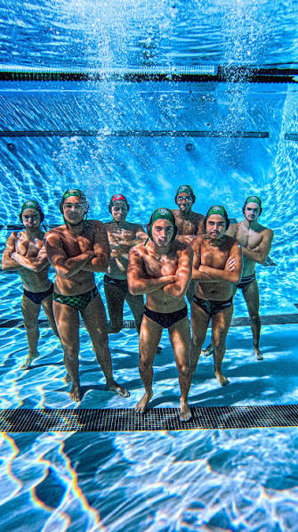

Team directory
Find a team. Follow its season.
Search ranked and tournament-connected teams, then open rankings, results, club relationships, and game-by-game history.

Featured teams
Team directory
Search ranked and tournament-connected teams, then open rankings, results, club relationships, and game-by-game history.

Featured teams